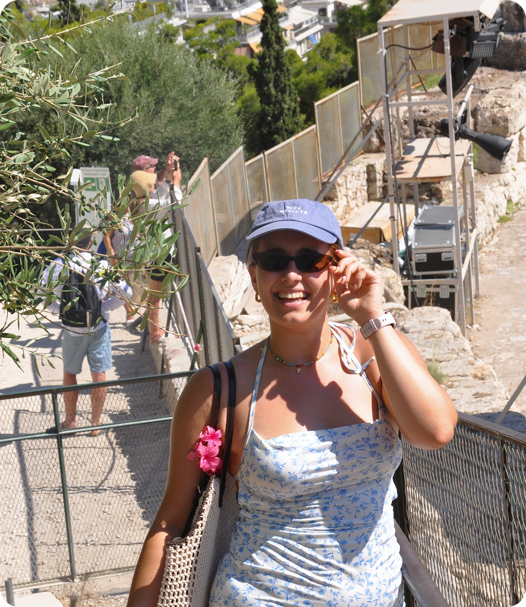
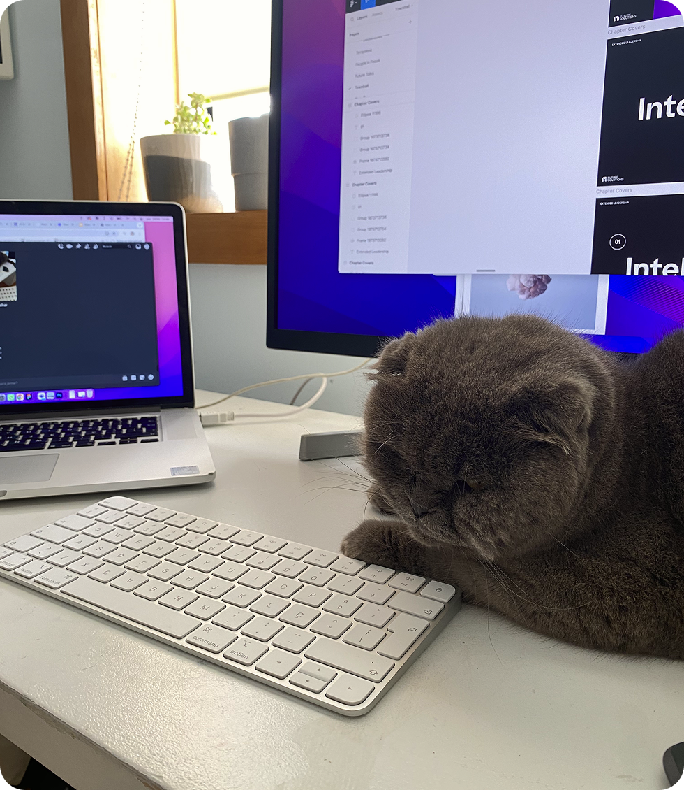

I'm a designer based in Portugal, open to opportunities anywhere that challenge me to grow. My practice sits between brand design and UX/UI, as I started out specialising in branding, but my curiosity has gradually drawn me towards digital products and experiences. I enjoy exploring the space between the two, finding ways to make visual identities and interfaces feel like parts of the same story.
I’m a curious mind, always looking for the next tools, ideas and how I can challenge myself.
Outside of design I’m a cat lover, plant mom and former competitive rower who's still a fan of voluntary suffering, but now at the gym. I love traveling and a good movie (as long as it's not horror), and I have a weird talent for Olympic Games trivia.
And yes, I'm a Gemini. Apparently, even my zodiac sign couldn't settle on just one thing.

